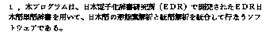
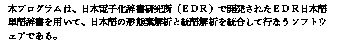
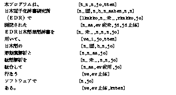

Copyright (C) 1996 UEKI Masahiro
1. Tools to analyse Japanese sentences using EDR Japanese word
dictionary
(1) Overview
This system integrates morphological and syntactic analysis.
(2) Features
* Using EDR Japanese word dictionary
* Integrating morphological and syntactic analysis
(3) Functions
This system uses EDR Japanese word dictionary developed by
EDR, and integrates morphological and syntactic analysis. EDR Japanese
word dictionary is a quite enormous dictionary containing about
250,000 words. EDR Japanese word dictionary is a part of series of EDR
dictionaries. There are another kinds of dictionaries like conceptual
dictionary, bilingual dicionary etc. These dictionaries are usefull in
many fields. This system provides morphological and syntactic
analysis. Combining with other dictionaries and analyser, it will be
more useful for much broad purpose.
2. Environment
Machine type:
Sun SparcStation10/51
Operating System:
SunOS 4.1.3
Languages:
C (gcc 2.7.2)
protcl ver1.4 (sicstus prolog 2.1#9 + tcl 7.4 + tk 4.0)
perl 4.036
Size of source code:
45k bytes dictionary server (necessary)
71k bytes LR table generator (optional)
72k bytes MSLR parser (not including LR table)
Notes: This package doesn't contain EDR dictionary, because it is not
a free dictionary.
(for detail, see http://www.iijnet.or.jp/edr)
This system uses search library (written in C) by EDR. It is
available from http://www.iijnet.or.jp/edr/E_Tool.html
3. List of files
README.euc this file
dsv/ dictionary server
Makefile
check_dic.c
consult.c
dsv.h
hash.c
hash.h
hinsi_sai2.h
hira_kana2.c
make_exe.c
serv.c
mlr/ LR table generator
LR.c
LR.h
Makefile
README
ReadRules.c
WriteLR.c
WriteLR_cpm.c
config.h
connect.c
cpm.c
error.c
fileio.c
follow.c
gen_sglr.c
grform.c
make_sglr.prl
mlr2.c
time.c
mslr/ MSLR parser
bigram_sai.pl
client.pl
compile.pl
cond.pl
consult.pl
hinshi.pl
hostdsv.prl
jiritsugo.pl
load.pl
pack.pl
parser1-2.sglr.pl
sglr.pl
stack.pl
tree.pl
unpack.pl
usage
util.pl
xmslr.tk
sample/ example
dtrans.patch
sample.bun
sample.con
sample.dic
sample.gr
search.patch
sicstusrc.sample
4. Installation
This system consists of 4 modules, LR table generator, utility
to transform LR table, dictionary server and MSLR parser. MSLR parser
module in this package contains LR table. If you don't want to change
grammar, you need dictionary server and MSLR parser only.
About LR table generator, see appendix.
(1) dictionary server
First, you have to make EDR dictionary search library and
system dictionary for Japanese word dictionary. (see appendix)
Set two environment variables "EDR_LIB_DIR" and
"EDR_INCLUDE_DIR" to proper path.
Make in the dsv directory.
(2) MSLR parser
No particular thing to do. But you had better 'compile' prolog
sources. To compile, execute sicstus prolog and then just 'consult'
"compile.pl".
| ?- [compile].
If fastcode compile is available, you had better set
prolog_flag befor compiling.
| ?- prolog_flag(compiling,_,fastcode).
Note that compiled objects (*.ql) are about 10 times as big as
original sources (*.pl).
The size of LR table (sglr.pl) in the package is quite big, so it
takes long time to 'consult'. You had better 'save' prolog status.
(load library)
| ?- use_module(library(ordsets)).
| ?- use_module(library(lists)).
(if you compiled prolog sources)
| ?- [load].
(if you didn't compile prolog sources)
| ?- [consult].
(to save)
| ?- save(mslr).
To run MSLR parser, run saved object 'mslr'.
% ./mslr
5. How to use
Before run MSLR parser, don't forget run dictionary server 'dsv'.
(1) To analyse all sentences in a file
| ?- mslr(filename).
(2) To analyse some sentences in a file
| ?- kioku(filename). <-- read all sentences from a file
| ?- disp_sentence. <-- display input sentences
| ?- mslr(number). <-- analyse a sentence specified by number
You can use list also.
| ?- mslr([filename1, filename2, filename3]).
| ?- mslr([number1, number2, number3]).
To keep a log, set option 'output'.
| ?- set_option(output).
* Additional function is available only for protcl users.
When you use protcl, you can see parse tree on Tk canvas.
When you already analyse some sentences, just specify sentence number.
| ?- xdisp_tree(number).
Otherwise, you use xmslr instead of mslr.
| ?- xmslr(number).
'xmslr' first analyse sentence, and then call xdisp_tree
automatically.
----------------------------------------------------------------------
Appendix
A. LR table generation
To generate LR table, you need two programs, mlr2 and gen_sglr,
and two data, grammar and connection matrix. First make programs
in proper directory.
Grammar must be written in CFG format. Current system always require
connection matrix, even if you don't want to use it. In such case, prepare a
matrix that all the pairs can connect.
To make LR table that MSLR parser can use, run script as follows.
% ./make_sglr.prl -g grammar -c connection_matrix -o sglr.pl
B. EDR dictionary search library and EDR system dictionary
Some programs related to EDR dictionary are available via WWW.
http://www.iijnet.or.jp/edr/E_Tool.html
Download dictionary browser for windows(Tool-WIndows-Archives.tar.gz).
Directory src/search/ contains sources of dictionary search library, and
src/dtrans/unix contains those of dictionary translator. Note that sources for
search library are written using S-JIS code, so before compile, don't forget
convert kanji code. This package contains some patches. Before compile
programs, update with patches.
Then make in each directories.
To make system dictionary, run dtrans.
% dtrans -WD < JWD.DIC
C. examples
% ./mslr
yes
| ?- kioku('../sample/sample.bun').
yes
| ?- disp_sentence.

yes
| ?- mslr(1).

consulting dictionary ... done
time for consult = 1260 msec
analyzing sentence o.o..oooooooooooooo..oooooooo..oooooooooooooooooooooooooooo.oooooo..o..ooooo done
time for analyze = 3240 msec
unpacking forest ... done
time for unpack = 90 msec
extracting bunsetsu ... done
time for extracting bunsetsu = 130 msec

Number of result = 1
time for total = 4780 msec
yes
D. Sample dictionary
EDR institute allows me to include sample dictionary in this package.
It contains words in the example sentence above.